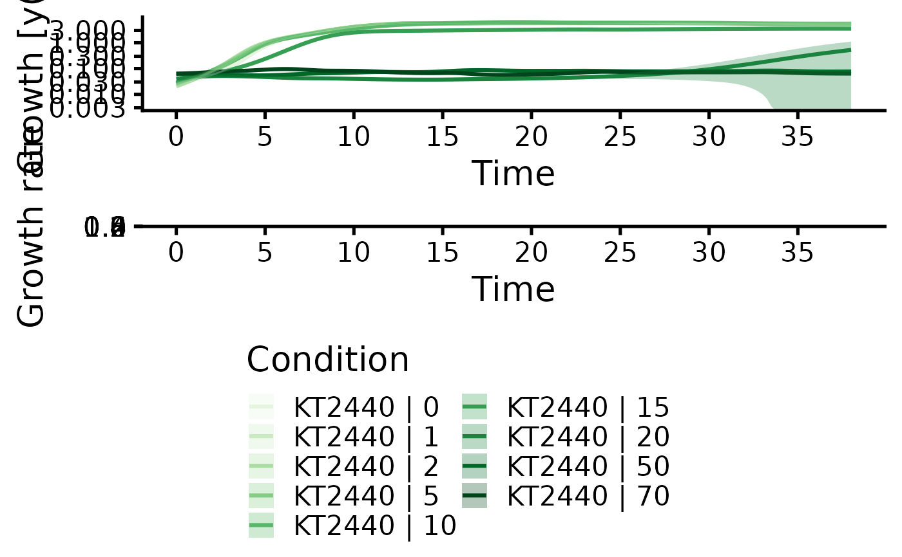

Run a complete growth curve analysis and dose-reponse analysis workflow.
Source:R/growth_workflows.R
growth.workflow.Rdgrowth.workflow runs growth.control to create a grofit.control object and then performs all computational fitting operations based on the user input. Finally, if desired, a final report is created in PDF or HTML format that summarizes all results obtained.
Usage
growth.workflow(
grodata = NULL,
time = NULL,
data = NULL,
ec50 = TRUE,
mean.grp = NA,
mean.conc = NA,
neg.nan.act = FALSE,
clean.bootstrap = TRUE,
suppress.messages = FALSE,
fit.opt = c("a"),
t0 = 0,
tmax = NA,
min.growth = NA,
max.growth = NA,
log.x.gc = FALSE,
log.y.lin = TRUE,
log.y.spline = TRUE,
log.y.model = TRUE,
biphasic = FALSE,
lin.h = NULL,
lin.R2 = 0.97,
lin.RSD = 0.1,
lin.dY = 0.05,
interactive = FALSE,
nboot.gc = 0,
smooth.gc = 0.55,
model.type = c("logistic", "richards", "gompertz", "gompertz.exp", "huang", "baranyi"),
dr.method = c("model", "spline"),
dr.model = c("gammadr", "multi2", "LL.2", "LL.3", "LL.4", "LL.5", "W1.2", "W1.3",
"W1.4", "W2.2", "W2.3", "W2.4", "LL.3u", "LL2.2", "LL2.3", "LL2.3u", "LL2.4",
"LL2.5", "AR.2", "AR.3", "MM.2"),
growth.thresh = 1.5,
dr.have.atleast = 6,
dr.parameter = c("mu.linfit", "lambda.linfit", "dY.linfit", "A.linfit", "mu.spline",
"lambda.spline", "dY.spline", "A.spline", "mu.model", "lambda.model",
"dY.orig.model", "A.orig.model"),
smooth.dr = 0.1,
log.x.dr = FALSE,
log.y.dr = FALSE,
nboot.dr = 0,
report = NULL,
out.dir = NULL,
out.nm = NULL,
export.fig = FALSE,
export.res = FALSE,
parallelize = TRUE,
...
)Arguments
- grodata
A
grodataobject created withread_dataorparse_data, or a list containing a'time'matrix as well as a'growth'dataframe.- time
(optional) A matrix containing time values for each sample.
- data
(optional) A dataframe containing growth data (if a
timematrix is provided as separate argument).- ec50
(Logical) Perform dose-response analysis (
TRUE) or not (FALSE).- mean.grp
(
'all', a string vector, or a list of string vectors) Define groups to combine into common plots in the final report based on sample identifiers (ifreport == TRUE). Partial matches with sample/group names are accepted. Note: The maximum number of sample groups (with unique condition/concentration indicators) is 50. If you have more than 50 groups, option'all'will produce the error! Insufficient values in manual scale. [Number] needed but only 50 provided.- mean.conc
(A numeric vector, or a list of numeric vectors) Define concentrations to combine into common plots in the final report (if
report == TRUE).- neg.nan.act
(Logical) Indicates whether the program should stop when negative growth values or NA values appear (
TRUE). Otherwise, the program removes these values silently (FALSE). Improper values may be caused by incorrect data or input errors. Default:FALSE.- clean.bootstrap
(Logical) Determines if negative values which occur during bootstrap should be removed (TRUE) or kept (FALSE). Note: Infinite values are always removed. Default: TRUE.
- suppress.messages
(Logical) Indicates whether grofit messages (information about current growth curve, EC50 values etc.) should be displayed (
FALSE) or not (TRUE). This option is meant to speed up the high-throughput processing data. Note: warnings are still displayed. Default:FALSE.- fit.opt
(Character or character vector) Indicates whether the program should perform a linear regression (
'l'), model fit ('m'), spline fit ('s'), or all ('a'). Combinations can be freely chosen by providing a character vector, e.g.fit.opt = c('l', 's')Default:fit.opt = c('l', 's').- t0
(Numeric) Minimum time value considered for linear and spline fits.
- tmax
(Numeric) Maximum time value considered for linear and spline fits.
- min.growth
(Numeric) Indicate whether only growth values above a certain threshold should be considered for linear regressions or spline fits.
- max.growth
(Numeric) Indicate whether only growth values below a certain threshold should be considered for linear regressions or spline fits.
- log.x.gc
(Logical) Indicates whether ln(x+1) should be applied to the time data for linear and spline fits. Default:
FALSE.- log.y.lin
(Logical) Indicates whether ln(y/y0) should be applied to the growth data for linear fits. Default:
TRUE- log.y.spline
(Logical) Indicates whether ln(y/y0) should be applied to the growth data for spline fits. Default:
TRUE- log.y.model
(Logical) Indicates whether ln(y/y0) should be applied to the growth data for model fits. Default:
TRUE- biphasic
(Logical) Shall
growth.gcFitLinearandgrowth.gcFitSplinetry to extract growth parameters for two different growth phases (as observed with, e.g., diauxic shifts) (TRUE) or not (FALSE)?- lin.h
(Numeric) Manually define the size of the sliding window used in
growth.gcFitLinearIfNULL, h is calculated for each samples based on the number of measurements in the growth phase of the plot.- lin.R2
(Numeric) R2 threshold for
growth.gcFitLinear- lin.RSD
(Numeric) Relative standard deviation (RSD) threshold for calculated slope in
growth.gcFitLinear- lin.dY
(Numeric) Threshold for the minimum fraction of growth increase a linear regression window should cover. Default: 0.05 (5%).
- interactive
(Logical) Controls whether the fit of each growth curve and method is controlled manually by the user. If
TRUE, each fit is visualized in the Plots pane and the user can adjust fitting parameters and confirm the reliability of each fit per sample. Default:TRUE.- nboot.gc
(Numeric) Number of bootstrap samples used for nonparametric growth curve fitting with
growth.gcBootSpline. Usenboot.gc = 0to disable the bootstrap. Default:0- smooth.gc
(Numeric) Parameter describing the smoothness of the spline fit; usually (not necessary) within (0;1].
smooth.gc=NULLcauses the program to query an optimal value via cross validation techniques. Especially for datasets with few data points the option NULL might cause a too small smoothing parameter. This can result a too tight fit that is susceptible to measurement errors (thus overestimating growth rates) or produce an error insmooth.splineor lead to an overestimation. The usage of a fixed value is recommended for reproducible results across samples. See?smooth.splinefor further details. Default:0.55- model.type
(Character) Vector providing the names of the parametric models which should be fitted to the data. Default:
c('logistic', 'richards', 'gompertz', 'gompertz.exp', 'huang', 'baranyi').- dr.method
(Character) Define the method used to perform a dose-responde analysis: smooth spline fit (
'spline') or model fitting ('model').- dr.model
(Character) Provide a list of models from the R package 'drc' to include in the dose-response analysis (if
dr.method = 'model'). If more than one model is provided, the best-fitting model will be chosen based on the Akaike Information Criterion.- growth.thresh
(Numeric) Define a threshold for growth. Only if any growth value in a sample is greater than
growth.thresh(default: 1.5) times the start growth, further computations are performed. Else, a message is returned.- dr.have.atleast
(Numeric) Minimum number of different values for the response parameter one should have for estimating a dose response curve. Note: All fit procedures require at least six unique values. Default:
6.- dr.parameter
(Character or numeric) The response parameter in the output table to be used for creating a dose response curve. See
growth.drFitfor further details. Default:'mu.linfit', which represents the maximum slope of the linear regression. Typical options include:'mu.linfit','lambda.linfit','dY.linfit','mu.spline','dY.spline','mu.model', and'A.model'.- smooth.dr
(Numeric) Smoothing parameter used in the spline fit by smooth.spline during dose response curve estimation. Usually (not necessesary) in (0; 1]. See documentation of smooth.spline for further details. Default:
NULL.- log.x.dr
(Logical) Indicates whether
ln(x+1)should be applied to the concentration data of the dose response curves. Default:FALSE.- log.y.dr
(Logical) Indicates whether
ln(y+1)should be applied to the response data of the dose response curves. Default:FALSE.- nboot.dr
(Numeric) Defines the number of bootstrap samples for EC50 estimation. Use
nboot.dr = 0to disable bootstrapping. Default:0.- report
(Character or NULL) Create a PDF (
'pdf') and/or HTML ('html') report after running all computations. DefineNULLif no report should be created. Default: (c('pdf', 'html'))- out.dir
Character or
NULLDefine the name of a folder in which all result files are stored. IfNULL, the folder will be named with a combination of 'GrowthResults_' and the current date and time.- out.nm
Character or
NULLDefine the name of the report files. IfNULL, the files will be named with a combination of 'GrowthReport_' and the current date and time.- export.fig
(Logical) Export all figures created in the report as separate PNG and PDF files (
TRUE) or not (FALSE). Only effective ifreport != NULL.- export.res
(Logical) Create tab-separated TXT files containing calculated growth parameters and dose-response analysis results as well as an .RData file for the resulting
grofitobject.- parallelize
Run linear fits and bootstrapping operations in parallel using all but one available processor cores
- ...
Further arguments passed to the shiny app.
Value
A grofit object that contains all computation results, compatible with various plotting functions of the QurvE package and with growth.report.
- time
Raw time matrix passed to the function as
time(if nogrofitobject is provided).- data
Raw growth dataframe passed to the function as
data(if nogrofitobject is provided).- gcFit
gcFitobject created with the call ofgrowth.gcFit.- drFit
drFitobject created with the call ofgrowth.drFit.- expdesign
Experimental design table inherited from
grodataor created from the identifier columns (columns 1-3) indata.- control
Object of class
grofit.controlcreated with the call ofgrowth.control.
Details
Common response parameters used in dose-response analysis:
Linear fit:
- mu.linfit: Growth rate
- lambda.linfit: Lag time
- dY.linfit: Density increase
- A.linfit: Maximum measurement
Spline fit:
- mu.spline: Growth rate
- lambda.spline: Lag time
- A.spline: Maximum measurement
- dY.spline: Density increase
- integral.spline: Integral
Parametric fit:
- mu.model: Growth rate
- lambda.model: Lag time
- A.model: Maximum measurement
- integral.model: Integral'
See also
Other workflows:
flFit(),
growth.gcFit()
Other growth fitting functions:
growth.drFit(),
growth.gcBootSpline(),
growth.gcFit(),
growth.gcFitLinear(),
growth.gcFitModel(),
growth.gcFitSpline()
Other dose-response analysis functions:
flFit(),
growth.drBootSpline(),
growth.drFitSpline(),
growth.gcFit()
Examples
# Create random growth data set
rnd.data1 <- rdm.data(d = 35, mu = 0.8, A = 5, label = 'Test1')
rnd.data2 <- rdm.data(d = 35, mu = 0.6, A = 4.5, label = 'Test2')
rnd.data <- list()
rnd.data[['time']] <- rbind(rnd.data1$time, rnd.data2$time)
rnd.data[['data']] <- rbind(rnd.data1$data, rnd.data2$data)
# Run growth curve analysis workflow
res <- growth.workflow(time = rnd.data$time,
data = rnd.data$data,
fit.opt = 's',
ec50 = FALSE,
export.res = FALSE,
suppress.messages = TRUE,
parallelize = FALSE)
# Load custom dataset
input <- read_data(data.growth = system.file('2-FMA_toxicity.csv', package = 'QurvE'))
#> Sample data are stored in columns. If they are stored in row format, please run read_data() with data.format = 'row'.
res <- growth.workflow(grodata = input,
fit.opt = 's',
ec50 = TRUE,
export.res = FALSE,
suppress.messages = TRUE,
parallelize = FALSE)
#> The chosen 'dr.parameter' is not compatible with the selected fitting options ('fit.opt'). Dose-response analysis will not be performed.
plot(res)
